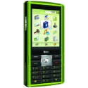

Greenphone™ Release NotesQtopia® Greenphone SDK is a virtual machine created to run with VMware® Player.
Please download and install the latest free VMware Player
before continuing with the install. Documentation
More information on Greenphone updates, applications and downloads is available at http://www.qtopia.net Known IssuesBluetooth is currently not supported by Qtopia software Only wav file support is available in this release (no video playback) Build informationThis package contains Qtopia Greenphone Version: !QPE_VERSION! Build: !CHANGENO! |